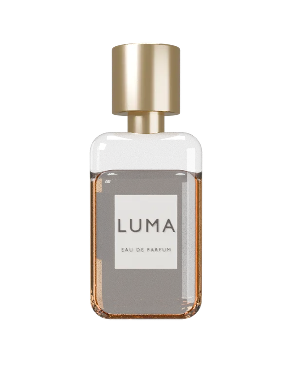

הירו של בושם. הבקבוק לא תמונה אחת אלא 65 צילומים מזוויות שונות, והוא מסתובב ונוטה לכיוון העכבר כאילו הוא מסתכל עליו. ההשתקפויות על הזכוכית והזהב זזות כמו במציאות, כי התאורה נשארה במקום והמוצר זז מתחתיה. כשהעכבר עוזב, הבקבוק ממשיך לנשום בתנועה קטנה. בטלפון גוררים אותו באצבע.
מתי משתמשים: מוצר פיזי אחד שהוא הכוכב: בושם, שעון, אוזניות, בקבוק יין, נעל, קופסת מוצר. מתאים כשיש מודל תלת-ממדי או אפשר לבנות אחד, ורוצים שהמבקר ירגיש שהמוצר אמיתי. מתי לא: שירות בלי מוצר, כמה מוצרים באותו מסך (כל אחד הוא עשרות תמונות), או מוצר שטוח שאין לו מה להראות מהצד.
הדמו כאן עיצובי-ניטרלי בכוונה. כשהמהלך נכנס לפרויקט, מיובאת רק ההתנהגות: הצבעים, הרדיוסים, הפונטים והצללים יורשים את העיצוב של אותו פרויקט.
LUMA · או דה פרפיום
ניחוח חם שנפתח לאט ונשאר על העור עד הערב. 50 מ"ל, זכוכית עבה ופקק פליז מלוטש.
להזמנת בקבוק
drawImage של התמונה הקרובה למיקום הנוכחי; המיקום נגרר אחרי היעד בהחלקה (lerp של 0.08 בכל פריים), כך שגם רשת של 6 מעלות נראית רציפה. היעד: מיקום העכבר ביחס למרכז הבקבוק, מנורמל לחצי מסך, ובטלפון גרירה אופקית. אחרי 2.5 שניות בלי תנועה היעד נודד לאט בתנועת שמונה. הצל מתחת לבקבוק הוא אליפסה ב-CSS שזזה הפוך לסיבוב. הלולאה רצה רק כשהרכיב במסך ונעצרת כשהבקבוק הגיע ליעד. בלי JS ובהפחתת תנועה: צילום החזית בלבד, בלי סיבוב. איך מייצרים למוצר אחר: התסריט בתיקיית blender מקבל מצב turn, תיקייה, רוחב ומספר דגימות; מחליפים את המודל ומריצים. אסור: סרטון במקום רצף (קפיצות בגלילה אחורה), או רשת צפופה יותר מכל 4 מעלות (המשקל מוכפל, והעין לא רואה הבדל).הקוד כאן עומד בפני עצמו. כל טוקן עיצוב נושא ברירת מחדל, מחלקות העזר של המאגר מוטמעות בו, ותגי הסקריפט מסודרים לפי הסדר הנכון. פרויקט שמגדיר --accent או --line משלו יורש אותם אוטומטית. הרכיב הזה מסתמך על dir="rtl".
/* מחלקות עזר של המאגר שהרכיב הזה משתמש בהן */
.stage{padding:var(--sec, clamp(120px, 12vw, 260px)) var(--gutter, clamp(24px, 5vw, 96px));position:relative}
.stage.tight{padding-block:clamp(48px,5vw,90px)}
.stage.full{padding-inline:0}
/* H36 · מוצר שמסתובב אחרי העכבר */
.lu{position:relative;display:grid;grid-template-columns:minmax(0,1fr) minmax(0,1fr);align-items:center;gap:clamp(24px,4vw,64px);min-height:min(88vh,820px);padding:clamp(40px,6vw,96px) clamp(20px,5vw,72px);border-radius:clamp(20px,2.4vw,32px);background:radial-gradient(120% 90% at 30% 55%,color-mix(in srgb,var(--accent, #4a3aff) 10%,var(--bg, #f7f7fa)),var(--bg, #f7f7fa) 70%);color:var(--ink, #16182b);overflow:clip}
.lu-tx{display:grid;gap:18px;max-width:30rem}
.lu-k{margin:0;font-size:15px;font-weight:700;letter-spacing:.08em;color:var(--accent, #4a3aff)}
.lu-tx h1{margin:0;font-size:clamp(30px,3.4vw,48px);font-weight:800;line-height:1.1;letter-spacing:-.01em;text-wrap:balance;font-size:clamp(38px,5vw,72px)}
.lu-tx p{margin:0;color:var(--muted, #6a6d85);font-size:var(--fs-body, clamp(17px, 0.6vw + 0.7rem, 22px));line-height:1.6}
.lu-cta{justify-self:start;display:inline-flex;align-items:center;min-height:48px;padding:12px 24px;border-radius:999px;background:var(--ink, #16182b);color:var(--bg, #f7f7fa);font-weight:700;text-decoration:none}
.lu-cta:focus-visible{outline:2px solid var(--accent, #4a3aff);outline-offset:3px}
.lu-pd{position:relative;justify-self:center;width:min(100%,460px);aspect-ratio:4/5;touch-action:pan-y;cursor:grab}
.lu-pd:active{cursor:grabbing}
.lu-pd img,.lu-pd canvas{position:absolute;inset:0;width:100%;height:100%;object-fit:contain}
.lu-pd canvas{opacity:0;transition:opacity .4s cubic-bezier(.2,.6,.2,1)}
.lu.is-live .lu-pd canvas{opacity:1}
.lu.is-live .lu-pd img{opacity:0;transition:opacity .4s cubic-bezier(.2,.6,.2,1)}
.lu-sh{position:absolute;inset-inline:22%;inset-block-end:4%;height:7%;border-radius:50%;background:radial-gradient(closest-side,color-mix(in srgb,var(--ink, #16182b) 30%,transparent),transparent);filter:blur(6px);transform:translateX(var(--sx,0px));z-index:-1}
@media(max-width:860px){.lu{grid-template-columns:minmax(0,1fr);text-align:start}.lu-pd{order:-1;width:min(78vw,380px)}}<div class="stage"><section class="lu" data-lu>
<div class="lu-tx">
<p class="lu-k">LUMA · או דה פרפיום</p>
<h1>ענבר, ורד שחור ועץ ארז, בבקבוק שמחזיק את האור</h1>
<p>ניחוח חם שנפתח לאט ונשאר על העור עד הערב. 50 מ"ל, זכוכית עבה ופקק פליז מלוטש.</p>
<a class="lu-cta" href="#">להזמנת בקבוק</a>
</div>
<div class="lu-pd" role="img" aria-label="בקבוק הבושם LUMA, זכוכית שקופה עם נוזל ענבר ופקק זהב">
<span class="lu-sh" aria-hidden="true"></span>
<img src="https://liavwebdesign-spec.github.io/motion-vault/assets/media/luma/t-2-06.webp" width="600" height="750" alt="" decoding="async">
<canvas width="600" height="750" aria-hidden="true"></canvas>
</div>
</section></div>(function(){
const root=document.querySelector("[data-lu]");
if(!root||matchMedia("(prefers-reduced-motion: reduce)").matches)return; // צילום החזית נשאר
const pd=root.querySelector(".lu-pd"),cv=pd.querySelector("canvas"),ctx=cv.getContext("2d"),sh=pd.querySelector(".lu-sh");
const NY=13,NP=5,fr=[];
let tx=0,ty=0,x=0,y=0,last=performance.now(),raf=0,seen=false,drag=null,shown="";
function load(){
const B="https://liavwebdesign-spec.github.io/motion-vault/assets/media/luma/";let n=0;
for(let p=0;p<NP;p++)for(let q=0;q<NY;q++){
const im=new Image();im.decoding="async";
im.src=B+"t-"+p+"-"+String(q).padStart(2,"0")+".webp";
im.onload=()=>{if(++n===NP*NY){root.classList.add("is-live");kick();}};
fr.push(im);
}
}
function draw(){
const q=Math.round((x+1)/2*(NY-1)),p=Math.round((y+1)/2*(NP-1)),k=p+"-"+q;
const im=fr[p*NY+q];
if(k!==shown&&im&&im.naturalWidth){shown=k;ctx.clearRect(0,0,cv.width,cv.height);ctx.drawImage(im,0,0,cv.width,cv.height);}
sh.style.setProperty("--sx",(-x*14).toFixed(1)+"px");
}
function tick(t){
raf=0;
if(!seen)return;
if(!drag&&t-last>2500){const s=(t-last)/1000;tx=Math.sin(s*.45)*.55;ty=Math.sin(s*.9)*.35;}
x+=(tx-x)*.08;y+=(ty-y)*.08;
draw();
if(Math.abs(tx-x)>.002||Math.abs(ty-y)>.002||t-last>2500)raf=requestAnimationFrame(tick);
}
function kick(){if(!raf&&seen&&fr.length)raf=requestAnimationFrame(tick);}
const cl=v=>Math.max(-1,Math.min(1,v));
addEventListener("pointermove",e=>{
if(e.pointerType!=="mouse"||!seen)return;
const r=pd.getBoundingClientRect();
tx=cl((e.clientX-(r.left+r.width/2))/(innerWidth/2));
ty=cl(-(e.clientY-(r.top+r.height/2))/(innerHeight/2));
last=performance.now();kick();
},{passive:true});
pd.addEventListener("pointerdown",e=>{if(e.pointerType!=="mouse")drag={x:e.clientX,v:tx};});
pd.addEventListener("pointermove",e=>{if(!drag)return;tx=cl(drag.v+(e.clientX-drag.x)/(pd.clientWidth*.6));ty=0;last=performance.now();kick();});
const up=()=>{drag=null;last=performance.now();};
pd.addEventListener("pointerup",up);pd.addEventListener("pointercancel",up);
new IntersectionObserver(([en])=>{
seen=en.isIntersecting;
if(seen&&!fr.length)load();
if(seen){last=performance.now()-2500;kick();}
},{rootMargin:"200px 0px"}).observe(root);
})();